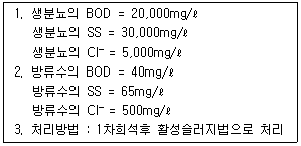
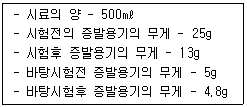

폐기물처리산업기사 (2003-05-25 기출문제)
1과목: 폐기물개론
1. 폐기물 발생량의 조사방법중 물질수지법에 관한 설명으로 알맞지 않는 것은?
- 비용이 비교적 적게들고 작업량이 적어 일반적으로 널리 사용된다.
- 주로 산업폐기물 발생량을 추산할 때 이용하는 방법이다.
- 조사하고자 하는 계(system)의 경계를 명확하게 설정하여야 한다.
- 계(system)로 유입되는 모든 물질들과 유출되는 물질들 간의 물질수지를 세움으로써 폐기물 발생량을 추정한다.
(정답률: 알수없음)

2. 플라스틱에서 종이를 선별하고 각기 다른 종류의 플라스틱혼합물에서 종류별로 플라스틱을 선별할 수 있는 방법으로 가장 적절한 것은?
- 자력선별
- 정전기적선별
- 와전류선별
- 광학선별
(정답률: 알수없음)
3. 다음 중 산업체에서 발생되는 폐기물의 양을 근원적으로 감소시키기 위한 방법으로 가장 적절한 것은?
- 재활용
- 제조공정개선
- 소각시설증대
- 압축기술개발
(정답률: 알수없음)
4. 다음은 적환장(transfer station)에 대한 설명이다. 잘못된 것은?
- 적환장 설계시에는 주변 환경요건을 고려하여야 한다.
- 수거해야 할 쓰레기 발생지역의 무게중심에 가까운 곳에 설치한다.
- 주요 간선도로와 인구밀집지역과는 가능한 한 멀리 떨어진 곳에 둔다.
- 변질되기 쉬운 쓰레기 수거에는 이용하지 않는 것이 좋다.
(정답률: 알수없음)
5. 다음 조건 지역의 쓰레기 수거는 1주일에 최소 몇 회이상 하여야 하는가? (단, 발생된 쓰레기밀도 500kg/m3, 차량적재용량 10m3, 압축비 2.0, 발생량 1.4kg/인·일, 적재함 이용율 85％, 차량대수 2대, 수거대상인구 10,000인, 수거인부 8명, 차량은 동시운행한다.)
- 4
- 6
- 8
- 10
(정답률: 55%)
6. 쓰레기 압축처리 방법중 포장기(baler) 대한 설명으로 적합치 않는 사항은?
- 압축후 삼베나 가죽 또는 철끈으로 묶는다.
- 관리에 용이한 크기나 무게로 포장한다.
- 완전하게 건조되지 못한 폐기물은 취급할 수 없다.
- 매립지에서는 포장을 해체하여 최종처분한다.
(정답률: 알수없음)
7. 함수율 80wt%인 슬러지를 함수율 10wt%로 건조시 슬러지 1톤당 증발된 수분량(kg)은?
- 778
- 783
- 789
- 792
(정답률: 알수없음)
8. 폐기물 성분 중 비가연성이 60(wt)%를 차지하고 있다. 밀도가 550kg/m3 인 폐기물이 10m3 있을 때 가연성 물질의 양(kg)은?
- 1,200
- 1,600
- 2,200
- 2,600
(정답률: 알수없음)
9. 다음중 폐기물의 겉보기 비중 측정법으로 가장 알맞은 것은?
- 부피를 알고 있는 용기에 넣어 30cm 높이에서 3회 낙하시킨 후 감소된 양만큼을 채워 kg/m3으로 환산한 수치
- 부피를 알고 있는 용기에 넣어 50cm 높이에서 3회 낙하시킨 후 감소된 양만큼을 채워 kg/m3으로 환산한 수치
- 부피를 알고 있는 용기에 넣어 70cm 높이에서 2회 낙하시킨 후 감소된 양만큼을 채워 kg/m3으로 환산한 수치
- 부피를 알고 있는 용기에 넣어 1m 높이에서 2회 낙하시킨 후 감소된 양만큼을 채워 kg/m3으로 환산한 수치
(정답률: 알수없음)
10. 폐기물 관리에 있어 중점을 두어야 할 우선 순위는?
- 감량화 ＞ 재활용 ＞ 처리공정 ＞ 최종처분
- 감량화 ＞ 처리공정 ＞ 최종처분 ＞ 재활용
- 최종처분 ＞ 처리공정 ＞ 재활용 ＞ 감량화
- 처리공정 ＞ 재활용 ＞ 감량화 ＞ 최종처분
(정답률: 알수없음)
11. 사용하는 자원,에너지,환경에 미치는 각종 부하를 원료자원 채취-생산-유통-사용-재사용-폐기의 전과정에 걸쳐 가능한 정량적으로 분석 및 평가하여 현재 인류가 직면하고있는 자원의 고갈 및 생태계의 파괴현상과 지구환경문제 등을 근본적으로 해결하기 위한 각종 개선방안을 모색하는 기술적이며 체계적인 과정을 의미하는 것은?
- LCA(Life Cycle Assessment)
- ISO 14000
- EMAS(Ecomanagement & Audit Scheme)
- ESSD(Environmentally Sound and Sustainable Development)
(정답률: 알수없음)
12. 인구 3,800명인 어느 지역에서 하루동안 발생되는 폐기물을 수거하기 위하여 용량 8m3인 청소차량이 5대, 1일 2회 수거, 1일 근무시간이 8시간인 환경미화원이 5명 동원된다. 쓰레기의 적재밀도가 0.3ton/m3일 때 MHT 값은?
- 1.33 man·hour/ton
- 1.50 man·hour/ton
- 1.67 man·hour/ton
- 1.75 man·hour/ton
(정답률: 알수없음)
13. 현행 폐기물의 분류로 틀린 것은?
- 생활폐기물
- 지정폐기물
- 특정폐기물
- 사업장폐기물
(정답률: 알수없음)
14. Trommel screen에 대한 설명중 틀린 것은?
- 원통의 길이가 길면 효율은 증가하나 동력소요가 많다.
- 원통의 경사도가 크면 효율은 떨어지고 부하율은 커진다.
- 스크린중 선별효율이 우수하고 유지관리상 문제가 적다.
- 회전속도가 증가하면 선별효율은 감소하지만 일정 속도 이상이 되면 원심력에 의해 효율이 증가한다.
(정답률: 알수없음)
15. 10년이상 오래된 매립지인 경우에 침출수의 특성 범위로 가장 옳은 것은?
- COD / TOC ＜ 2.0 , BOD / COD ＜ 0.1
- COD / TOC ＜ 2.0 , BOD / COD ＞ 0.5
- COD / TOC ＞ 2.8 , BOD / COD ＜ 0.1
- COD / TOC ＞ 2.8 , BOD / COD ＞ 0.5
(정답률: 알수없음)
16. 다음은 쓰레기 파쇄기에 대한 설명이다. 틀린 것은?
- 충격식 파쇄기는 유리나 목질류 등을 파쇄하는데 이용된다.
- 회전드럼이나 Wet Pulper는 습식으로 운용되는 파쇄기이다.
- 충격식 파쇄기는 대부분 왕복식으로 해머의 왕복 충격력을 이용한다.
- 전단식 파쇄기는 충격식 파쇄기에 비해 파쇄속도가 느리고 이물질의 혼입에 약하다.
(정답률: 알수없음)
17. 어떤 쓰레기의 입도를 분석한 바 입도누적 곡선상의 10%, 40%, 60%, 90%의 입경이 각각 1, 5, 10, 20㎜ 였다. 균등계수는?
- 5
- 10
- 20
- 40
(정답률: 알수없음)
18. 밀도 680㎏/m3인 쓰레기 200㎏이 압축되어 밀도가 960㎏/m3으로 되었다. 압축비는?
- 약 1.2
- 약 1.4
- 약 1.6
- 약 1.8
(정답률: 알수없음)
19. 어느도시의 쓰레기 발생량은 1.5㎏/인·일 이고 인구는 20만명이다. 쓰레기의 밀도가 400㎏/m3이면 하루에 발생하는 쓰레기의 부피는?
- 240 m3/d
- 300 m3/d
- 600 m3/d
- 750 m3/d
(정답률: 알수없음)
20. 수소 15.0 %, 수분 0.4 % 인 중유의 고위 발열량이 12,500 kcal/kg 일 때, 저위발열량은? (단, 저위발열량 산출식 HL = Hh - 600 (9H + W))
- 11,334 Kcal/kg
- 11,688 Kcal/kg
- 12,497 Kcal/kg
- 12,996 Kcal/kg
(정답률: 70%)
2과목: 폐기물처리기술
21. 다음 중 매립후 정상상태의 단계에서 발생하는 가스중 2번째로 그 발생량이 많은 가스는?
- 이산화탄소(CO2)
- 메탄(CH4)
- 황화수소(H2S)
- 수소(H2)
(정답률: 알수없음)
22. 쓰레기 소각시설 중 유동층방식 소각로의 장단점이 아닌 것은?
- 반응시간이 빨라 소각시간이 짧다.
- 기계적 구동부분이 적어 고장율이 낮다.
- 소각로 내부 온도의 자동제어가 어렵다.
- 연소효율이 높아 미연소분의 배출이 적고 2차 연소실이 불필요하다.
(정답률: 알수없음)
23. 인구 200,000명인 어느도시에 매립지를 조성하고자 한다. 1인 1일 쓰레기 발생량은 1.3kg/인-day이고 쓰레기 밀도는 0.5t/m3이다. 이 쓰레기를 압축하면 그 용적이 2/3로 줄어든다면 1년간에 필요한 매립면적은? (단, 매립지 깊이는 6m 이다)
- 12574m2
- 21089m2
- 35897m2
- 46523m2
(정답률: 알수없음)
24. 다음 고형화 방법중 유기성 고분자에 의한 고형화의 특징이 아닌 것은?
- 최종고화체의 체적증가가 단순하다.
- 수밀성이 매우 크며 다양한 폐기물에 적용가능하다.
- 폐기물의 특정 성분에 의한 중합체 구조의 장기적인 약화 가능성이 있다.
- 상업화된 처리법의 현장자료가 빈약하다.
(정답률: 알수없음)
25. 매립물의 조성이 C40H83O30N 일 경우 이 매립물 1mol당 발생하는 메탄는 몇 mol 인가? (단, 혐기성 반응이다)
- 22.5
- 18.5
- 14.5
- 10.5
(정답률: 알수없음)
26. 액상분사 소각로(Liquid Injection Incinerator)의 장점에 대한 설명과 가장 거리가 먼 것은?
- 구동장치가 없어서 고장이 적다.
- 운영비가 적다.
- 대기오염 방지시설 이외에 소각재의 처리설비가 필요없다.
- 고농도 고형분 소각의 경우에도 버너 막힘이 적다.
(정답률: 알수없음)
27. 호기성소화방법에 의하여 100Kℓ /d 의 분뇨를 처리할 경우에 처리장에 필요한 송풍량은? (단, BOD 20,000ppm, 제거율 60%, 제거 BOD당 필요풍량 100m3/BOD Kg, 분뇨비중 1.0 )
- 1200 m3/hr
- 5000 m3/hr
- 75000 m3/hr
- 120000 m3/hr
(정답률: 알수없음)
28. 일반적으로 열용량(kcal/kg)이 가장 낮고 회분량(%)이 가장 많으며 수분함량이 15~20%정도인 RDF의 종류는?
- Bulk RDF
- Powder RDF
- Pellet RDF
- Fluff RDF
(정답률: 알수없음)
29. 퇴비화 과정에서 공급되는 공기의 기능과 가장 거리가 먼 것은?
- 미생물이 호기적 대사를 할 수 있게 한다.
- 온도를 조절한다.
- 악취를 희석시킨다.
- 수분과 가스 등을 제거한다.
(정답률: 알수없음)
30. 크고 작은 고형물질에 둘러싸여 있는 수분으로 고형물질과 직접 결합해 있지 않기 때문에 농축등의 방법으로 용이하게 분리할 수 있는 슬러지내 물의 형태는?
- 간격수
- 모관결합수
- 내부수
- 표면부착수
(정답률: 알수없음)
31. 연소가스 탈황시 발생된 슬러지처리에 많이 사용되는 고형화방법은?
- 자가 시멘트법
- 시멘트 기초법
- 피막 시멘트법
- 석회 기초법
(정답률: 알수없음)
32. 다음 중 탄질비(C/N)의 값이 가장 낮은 것은?
- 나무
- 활성슬러지
- 종이
- 가축분뇨
(정답률: 알수없음)
33. 세로 가로 높이가 각각 1.0m, 1.2m, 1.5m인 연소실에서 연소실 열발생율을 3 × 105Kcal/h-m3 으로 유지하려면 저 발열량이 10,000Kcal/kg 인 중유를 매시간 어느정도 연소시켜야 하는가?
- 30kg/h
- 36kg/h
- 47kg/h
- 54kg/h
(정답률: 알수없음)
34. 알칼리도를 감소시키기 위해 희석수를 사용하여 슬러지를 개량(conditioning) 시키는 방법은?
- Freeze-Thaw
- Elutriation
- thickening
- Solvent Extraction
(정답률: 알수없음)
35. 다음의 조건하에서 BOD 제거효율(생물학적으로 제거된 부분에 한함)은?

- 99.0%
- 98.0%
- 97.0%
- 96.0%
(정답률: 알수없음)
36. 매립된지 5년이 넘지 않은 매립지에서 발생되는 침출수를 처리하기 위한 공정으로 가장 효율성이 높으면서 경제적인 것은? (단, 침출수 특성 : COD/TOC ＞ 2.8, BOD/COD ＞ 0.5)
- 생물학적처리
- 화학적처리
- 활성탄처리
- 역삼투
(정답률: 알수없음)
37. 열분해를 통하여 생성되는 연료의 성질을 결정짓는 요소와 가장 거리가 먼 것은?
- 폐기물의 성상
- 가열속도
- 운전온도
- 산소분율
(정답률: 알수없음)
38. 폐기물의 연소능력이 250kg/m2-hr이며 연소할 폐기물의 양이 200m3/day 이다. 1일 8시간 소각로를 가동시킨다고 할 때 로스톨의 면적은? (단, 폐기물의 밀도는 150kg/m3 임)
- 15m2
- 30m2
- 45m2
- 60m2
(정답률: 알수없음)
39. 침출수 집배수층 재료로 가장 일반적으로 사용되는 것은?
- 점토
- 실트
- 모래
- 자갈
(정답률: 알수없음)
40. 고형화처리된 폐기물 검사항목과 가장 거리가 먼 것은?
- 투수율
- 함수율
- 압축강도
- 용출시험
(정답률: 40%)
3과목: 폐기물 공정시험 기준(방법)
41. 폐기물 공정시험방법에서 사용하는 시료의 축소방법이 아닌 것은?
- 구획법
- 교호삽법
- 체적법
- 원추4분법
(정답률: 알수없음)
42. 용액 100g중 성분무게(g)를 표시(%)한 것은?
- W/W%
- V/V%
- W/V%
- V/W%
(정답률: 알수없음)
43. K2Cr2O7 을 사용하여 100mg/ℓ 의 크롬 표준액 100㎖를 제조할 때 K2Cr2O7 은 얼마나 취해야 하는가? (단, 원자량 K=39, Cr=52, O=16 )
- 14.1mg
- 28.3mg
- 35.4mg
- 56.5mg
(정답률: 알수없음)
44. 원자흡광분석에서의 간섭현상과 그에 대한 내용으로 가장 거리가 먼 것은?
- 분광학적 간섭-인접 스펙트럼선의 영향
- 물리적 간섭-과량의 간섭원소의 첨가
- 화학적인 간섭-불꽃중에서 원자가 이온화
- 화학적인 간섭-공존물질과 작용하여 다른 화합물 형성
(정답률: 알수없음)
45. 폐기물공정시험방법상 용출시험의 적용범위와 가장 거리가 먼 것은?
- 지정폐기물의 매립방법을 결정하기 위해서다.
- 지정폐기물의 판정을 결정하기 위해서다.
- 지정 폐기물의 전처리방법을 결정하기 위해서다.
- 지정폐기물의 중간처리 방법을 결정하기 위해서다.
(정답률: 알수없음)
46. 원자흡광광도법에서 정량법에 의한 검량선의 작성방법과 가장 거리가 먼 것은?
- 검량선법
- 내부표준법
- 표준첨가법
- 넓이 백분률법
(정답률: 알수없음)
47. 시안(CN)분석(흡광광도법)에 관한 내용 중 틀린 것은?
- 다량의 유지류가 포함되어 있으면 pH 6∼7로 조절하여 노말헥산 또는 클로로포름을 넣고 흔들어 섞은 후 수층을 분리한다.
- pH 2이하의 산성에서 에틸렌디아민테트라아세트산이 나트륨을 넣고 가열증류 한다.
- 잔류염소가 함유되어 있는 경우 황산나트륨을 넣어 제거한다.
- 황화합물이 함유된 시료는 초산아연용액을 넣어 제거한다
(정답률: 알수없음)
48. 이온전극법으로 Na+, K+, NH4+ 이온을 측정하는데 가장 적합한 전극은?
- 고체막 전극
- 격막형 전극
- 유리막 전극
- 활성막 전극
(정답률: 알수없음)
49. 시료채취시 시료용기를 무색경질 유리병으로 사용하여야 하는 시료내 측정대상 오염물질이 아닌 것은?
- 폴리클로리네이티드비페닐 (PCB)
- 휘발성 저급 염소화 탄화수소류
- 6가 크롬
- 유기인
(정답률: 알수없음)
50. 흡광광도 분석장치에 관한 사항이다. 장치의 배열순서가 옳은 것은?
- 광원부 - 시료부 - 파장선택부 - 측광부
- 광원부 - 파장선택부 - 시료부 - 측광부
- 시료부 - 광원부 - 파장선택부 - 측광부
- 시료부 - 파장선택부 - 광원부 - 측광부
(정답률: 알수없음)
51. 가스크로마토그래피의 검출기 중 유기할로겐화합물, 니트로화합물, 유기 금속화합물을 선택적으로 검출할 수 있는 것은?
- Electron Capture Detector ( ECD )
- Flame Ionization Detector ( FID )
- Flame Photometric Detector ( FPD )
- Thermal Conductivity Detector ( TCD )
(정답률: 알수없음)
52. 흡광광도법에서 주로 자외부 파장범위에 사용되는 흡수셀의 재질은?
- 금속제
- 석영제
- 유리제
- 플라스틱제
(정답률: 알수없음)
53. 어떤 정색용액의 흡광도를 10㎜의 셀을 사용하여 측정한 결과 흡광도 E = 0.40 이었다면 이 용액을 5㎜의 셀로 측정하였을 때의 흡광도는?
- 0.2
- 0.1
- 0.04
- 0.02
(정답률: 알수없음)
54. '항량으로 될 때까지 강열한다'라 함에 대한 설명중 옳은 것은?
- 같은 조건에서 1시간 더 강열할 때 전후 무게의 차가 g당 0.1mg이하 일 때를 말한다.
- 같은 조건에서 1시간 더 강열할 때 전후 무게의 차가 g당 0.2mg이하 일 때를 말한다.
- 같은 조건에서 1시간 더 강열할 때 전후 무게의 차가 g당 0.3mg이하 일 때를 말한다.
- 같은 조건에서 1시간 더 강열할 때 전후 무게의 차가 g당 0.5mg이하 일 때를 말한다.
(정답률: 알수없음)
55. 취급 또는 저장하는 동안에 이물이 들어가거나 또는 내용물이 손실되지 아니하도록 보호하는 용기는?
- 기밀용기
- 밀봉용기
- 밀폐용기
- 차광용기
(정답률: 알수없음)
56. 페기물 용출시험방법의 용출조작에 관한 설명으로 적절하지 못한 것은?
- 여과가 어려운 경우에는 원심분리기를 사용하여 매분당 3,000회전 이상으로 20분이상 원심 분리한 다음 상등액을 적당량 취하여 용출시험용 검액으로 한다.
- 시료의 수분함량이 80%이상일 때는 [20/(100-시료함수률)]의 식으로 보정한다.
- 시료조제가 끝난 혼합액을 상온, 상압에서 진탕회수가 매분당 약 200회, 4~5cm 정도로 6시간 연속진탕 한다.
- 진탕한 시료는 1.0μ m의 유리섬유여지로 여과하고 여과액을 적당량 취하여 용출시험용 검액으로 한다.
(정답률: 알수없음)
57. 다음은 시료채취에 관한 설명이다. 이중 올바르게 기술된 것은?
- 시료의 양은 1회에 200g이상 채취한다.
- 대형의 콘크리트 고형화물로써 분쇄가 어려울 경우는 임의의 6개소에서 균등량 혼합하여 채취한다.
- 대상 폐기물의 양이 1톤 미만인 경우, 시료의 최소 수는 6개이다.
- 5톤 이상의 차량에 적재되어 있을 때에는 적재폐기물을 평면상에서 6등분 한 후 각 등분마다 시료를 채취한다.
(정답률: 알수없음)
58. 폐기물 시료의 전처리 방법 중 마이크로파(microwave)의 역할에 해당되는 것은?
- 시료내 무기물질의 제거를 위해
- 시료내 유기물질의 제거를 위해
- 시료내 방해성 중금속을 제거하기 위해
- 시료의 발색이 잘 되게 하기 위해
(정답률: 알수없음)
59. 폐기물 채취 시료의 보관방법으로 가장 적절한 것은?
- 현장에서 진한 염산을 첨가한 후 6개월 이내에 분석한다.
- 소각잔재, 오니 등의 시료는 작은 돌맹이등 다른이물질을 제거하고 냉동보관한다.
- 함유성분의 변화가 일어나지 않도록 0~4℃이하의 냉암소에 보관한다.
- 차광용기에 넣어 실온에서 보관한다.
(정답률: 알수없음)
60. 폐기물의 노말헥산 추출물질의 양을 측정하기 위해 다음과 같은 결과를 얻었다 노말헥산 추출물질의 농도는?

- 11800mg/ℓ
- 23600mg/ℓ
- 32400mg/ℓ
- 53800mg/ℓ
(정답률: 알수없음)
4과목: 폐기물 관계 법규
61. 폐기물처리업의 업종구분과 영업내용으로 알맞지 않는 것은?
- 폐기물수집,운반업 : 폐기물을 수집하여 처리장소로 운반하는 영업
- 폐기물중간처리업 : 폐기물중간처리시설을 갖추고 폐기물을 소각,중화,파쇄,고형화등의 방법에 의하여 중간처리하는 영업
- 폐기물최종처리업 : 폐기물최종처리시설을 갖추고 폐기물을 매립등(해역배출을 제외)의 방법에 의하여 최종처리하는 영업
- 폐기물종합처리업 : 폐기물을 수집, 운반, 중간처리, 최종처리를 종합적으로 함께 하는 영업
(정답률: 알수없음)
62. 시간당 처리능력이 2톤이상인 생활폐기물 소각시설의 다이옥신 배출기준은? (단, 1997년7월19일 당시 공사중이었거나 그 이후 설치된 시설인 경우, 단위 ng-TEQ/Nm3)
- 0.⑤
- 0.1
- 0.5
- 1.0
(정답률: 알수없음)
63. 폐기물 처리시설에 대한 기술관리대행계약시 포함될 점검항목은? (단, 중간처리시설의 경우, 공통사항)
- 철망등 외곽시설의 파손여부
- 계량시설의 정상가동 여부
- 소화 장비의 구입 여부
- 지하수 검사정의 수질검사 여부
(정답률: 알수없음)
64. 지정폐기물배출자가 그의 사업장에서 발생되는 지정폐기물 중 폐산,폐알카리의 최대 보관일수는? (단, 보관개시일 부터 )
- 120일
- 90일
- 60일
- 45일
(정답률: 알수없음)
65. 재활용 신고대상 폐기물로서 환경부령이 정하는 사업장폐기물이 아닌 것은? (단, 수집,운반 포함)
- 폐목재
- 폐타이어
- 고철
- 폐가전제품
(정답률: 알수없음)
66. 시장.군수.구청장이 생활폐기물관리 제외지역으로 지정할 수 있는 대상의 기준 가구수는?
- 30호 미만
- 50호 미만
- 70호 미만
- 100호 미만
(정답률: 알수없음)
67. 폐기물처리시설중 소각시설과 가장 거리가 먼 것은?
- 고온소각시설
- 용융시설
- 열분해시설(가스화시설 포함)
- 열처리조합시설
(정답률: 알수없음)
68. 폐기물의 수집 · 운반 · 보관 · 처리기준 및 방법을 위반한 경우 위반행위의 종별과 과징금의 금액이 잘못된 것은?
- 영업정지 1월 - 2천만원
- 영업정지 3월 - 5천만원
- 영업정지 6월 - 1억원
- 영업정지 1년 - 2억원
(정답률: 알수없음)
69. 다음 중 폐기물기본계획 수립시 포함될 사항과 가장 거리가 먼 것은?
- 폐기물의 처리현황 및 향후 처리계획
- 관할구역의 기상, 지형등의 자연환경과 토지이용 등에 관한 사항
- 폐기물의 수집, 운반, 보관 및 그 장비, 용기 등의 개선에 관한 사항
- 소요재원 확보계획
(정답률: 알수없음)
70. 폐기물처리담당자등이 이수하여야 하는 교육과정이라 볼 수 없는 것은?
- 폐기물처리시설 기술담당자과정
- 사업장폐기물 배출자과정
- 폐기물재활용 신고자과정
- 폐기물분석요원과정
(정답률: 알수없음)
71. 감염성폐기물처리에 관한 설명으로 알맞지 않는 것은?
- 멸균분쇄시설을 설치한 감염성폐기물배출자는 멸균 여부의 검사를 위하여 그 검사인력 및 시설, 장비를 갖추어야 한다
- 소각한후의 잔재물은 고형화처리하여 감염의 위험성을 최소화하여야 한다
- 멸균, 분쇄하는 경우에는 원형을 알아 볼 수 없도록 분쇄하되, 딱딱한 물질은 2센티미터이하로 분쇄하여야 한다
- 멸균, 분쇄한 후의 잔재물이 멸균이 되지 아니한 경우에는 다시 처리하여야 한다
(정답률: 알수없음)
72. 감염성폐기물을 대상으로 하는 폐기물처리시설의 기술관리인 자격으로 적합치 않는 것은?
- 폐기물처리산업기사
- 간호사
- 임상병리사
- 위생사
(정답률: 알수없음)
73. 특별시장, 광역시장, 도지사와 시장, 군수, 구청장(자치구구청장)은 폐기물처리기본계획을 몇년마다 수립하여야 하는가?
- 3년
- 5년
- 10년
- 15년
(정답률: 알수없음)
74. 폐기물처리 증명서류는 3년간 보존하여야 한다. 보존할 서류가 아닌 것은?
- 폐기물정산서
- 폐기물분석결과서
- 지정폐기물을 처리하는 자에게 지정폐기물의 처리를 위탁한 경우 위탁받은 처리자의 수탁확인서
- 폐기물 배출 및 처리실적 보고서
(정답률: 알수없음)
75. 사업장폐기물을 배출하는 사업장의 범위로 알맞지 않는 것은?
- 지정폐기물을 배출하는 사업장
- 폐기물을 1회 1톤이상 배출하는 사업장
- 폐기물을 1일 평균 300킬로그램이상 배출하는 사업장
- 일련의 공사, 작업등으로 인하여 폐기물을 5톤(공사의 경우에는 착공하는 때부터 완료하는 때까지 발생하는 폐기물의 양을 말함)이상 배출하는 사업장
(정답률: 알수없음)
76. 매립시설에서 발생되는 침출수의 화학적 산소요구량의 측정주기 기준은? (단, 침출수 배출량이 1일 2000세제곱미터이상인 경우)
- 수시로
- 매일 1회 이상
- 주 1회 이상
- 월 1회 이상
(정답률: 알수없음)
77. 기술관리인을 두어야 할 폐기물처리시설 범위기준에 관한 설명 중 틀린 것은?
- 1일 처리능력이 5톤 이상인 퇴비화시설
- 면적이 3만 m2 이상인 지정폐기물외의 매립시설
- 1일 처리 능력이 100톤 이상인 압축시설
- 시간당 처리능력이 600kg 이상인 소각시설(감염성폐기물 제외)
(정답률: 알수없음)
78. 지정폐기물중 감염성폐기물 수집, 운반에 관한 설명으로 틀린 것은?
- 감염성폐기물의 운반차량은 섭씨 4도이하의 냉장시설설비가 설치,가동되어야 한다.
- 감염성폐기물의 수집, 운반차량의 차체는 백색으로 도색하여야 한다.
- 감염성폐기물의 수집, 운반차량의 적재함의 양쪽옆면에는 감염성폐기물의 도형, 업소명 및 전화번호를 부착 또는 표기한다.
- 감염성폐기물의 수집, 운반차량의 적재함의 부착 또는 표기하는 글씨의 색깔은 녹색으로 하여야 한다.
(정답률: 알수없음)
79. 폐기물관리법 벌칙 중 5년 이하의 징역 또는 3,000만원 이하의 벌금에 처할 수 있는 경우에 해당 하지 않는 자는?
- 허가를 받지 아니하고 폐기물처리업을 한 자
- 부정한 방법으로 폐기물처리업 허가를 받은 자
- 폐쇄 명령을 이행하지 아니한 자
- 영업정지기간중에 영업을 한 자
(정답률: 알수없음)
80. 환경관리공단에서 교육 받아야 할 자는?
- 폐기물재활용신고자
- 폐기물 수집, 운반업자
- 폐기물처리업자(폐기물수집, 운반업자제외)가 고용한 기술요원
- 폐기물처리시설의 기술관리인
(정답률: 알수없음)